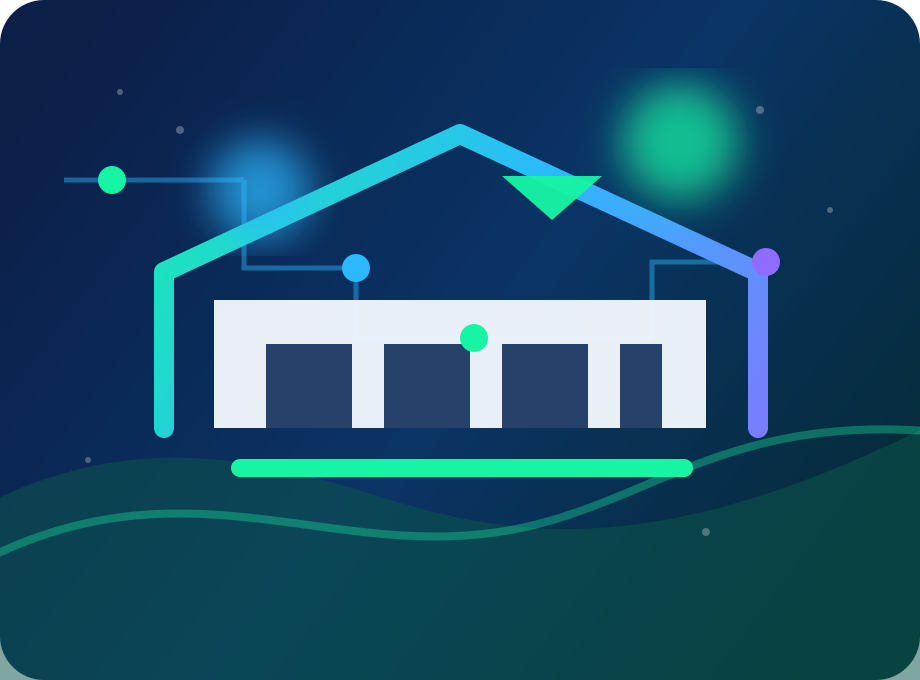

6 cursos diurnos
Formação técnica junto ao Ensino Médio, conectando base escolar, prática profissional e projetos de aprendizagem.
- Administração
- Rede de Computadores
- Ciências de Dados
- Meio Ambiente
- Informática
- Sistemas de Energia Renováveis
 Belém - Pará
Belém - Pará
Um portal demonstrativo para apresentar cursos técnicos, cultura maker, projetos educacionais e tecnologia aplicada em uma experiência pública, responsiva e segura.
Projeto demonstrativo não oficial inspirado na EETEPA Vilhena Alves; não representa canal institucional oficial.

Ementa organizada
A vitrine de cursos foi reorganizada a partir da lista fornecida, separando modalidades e eixos para navegação clara em celular, projetor e desktop.
Formação técnica junto ao Ensino Médio, conectando base escolar, prática profissional e projetos de aprendizagem.
Opções para quem já concluiu o Ensino Médio e busca qualificação técnica com foco em atuação profissional.
Laboratório Maker
O site conecta programação, robótica, modelagem, redes, dados, sustentabilidade e gestão em desafios que podem virar portfólio público e evidência de aprendizagem.
Explorar laboratórioProjetos educacionais
As propostas de projetos mostram como transformar cada eixo técnico em páginas, dashboards, simuladores e relatórios seguros, sem dados reais de estudantes.
Ver vitrine de projetos